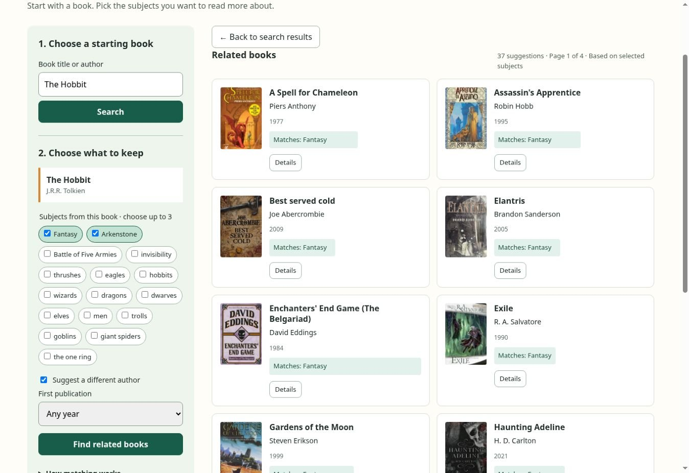
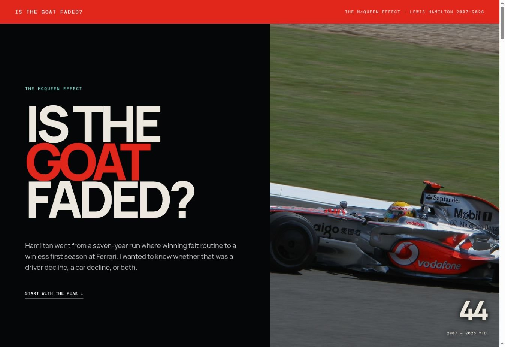
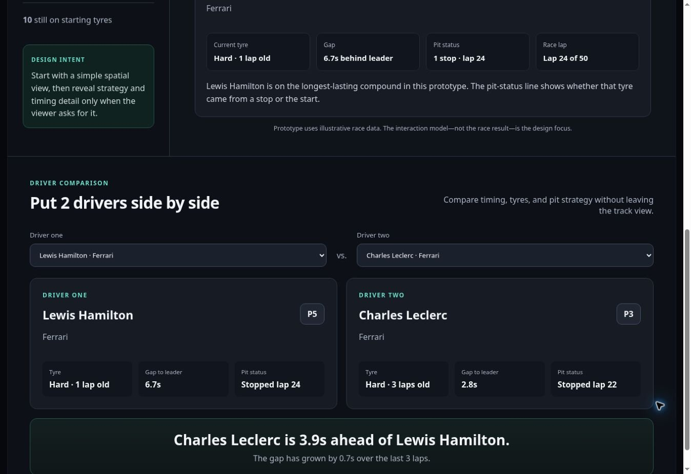

01 / WEB APPLICATION · PRODUCT

Cornell University / Information Science
I build software, analyze data, and research how people use technology — turning complicated information into experiences that make sense.
Selected work — an archive
From web applications to data analysis and product research, these are some of the projects I'm most proud of.




Beyond the interface / 01
Race Lens starts with the questions an F1 viewer has when the broadcast assumes they already know the sport. The work connects interface analysis with research, design decisions and an interactive prototype.
Explore Race Lens
07 / About me
I'm Beryl Koko, an Information Science student at Cornell University graduating in May 2027. I work across software development, analytics, product research and interface design — especially where the technical and human sides meet.
Have something interesting in mind?